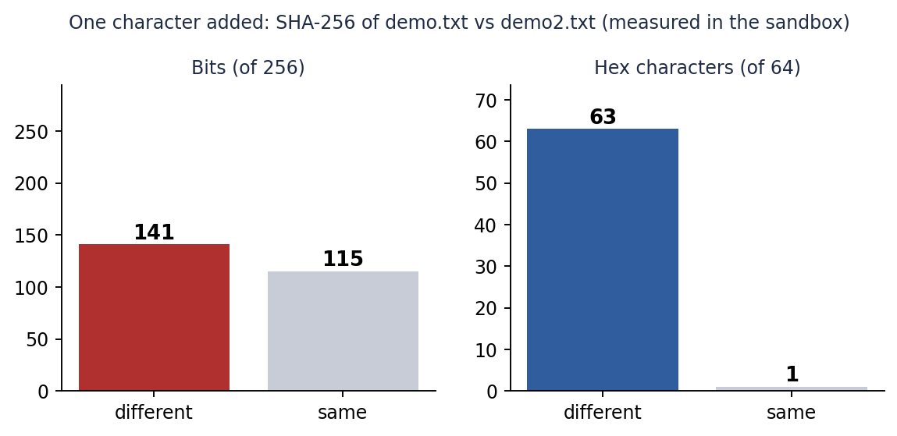
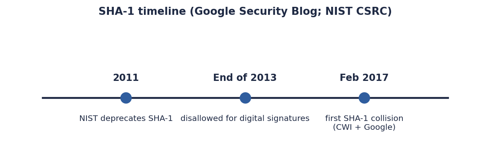
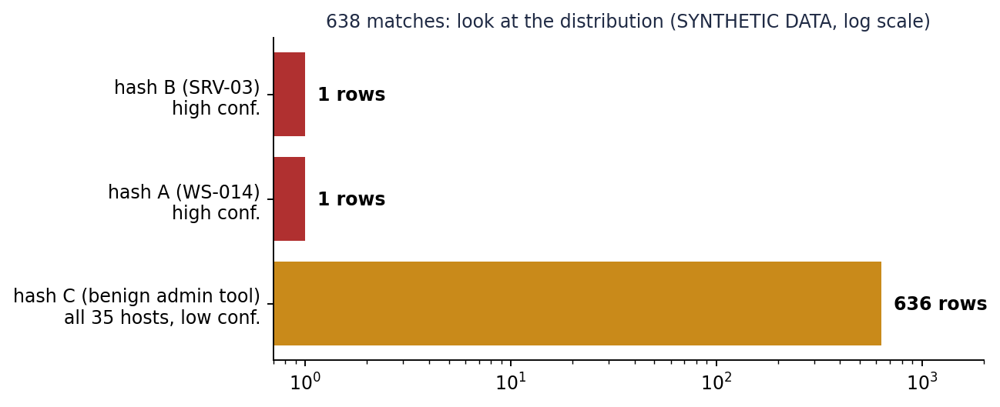
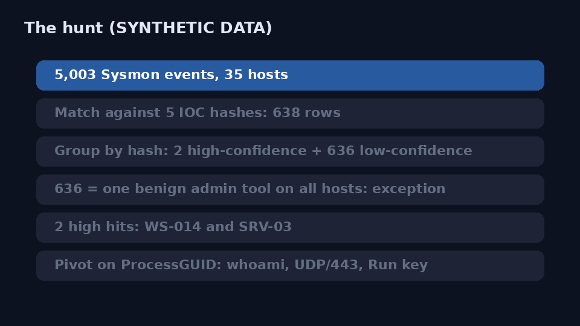
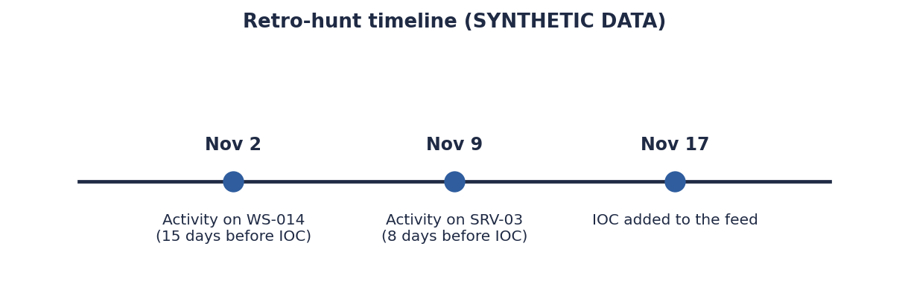
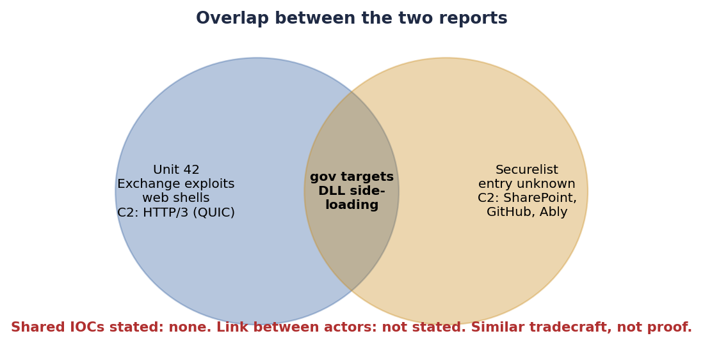
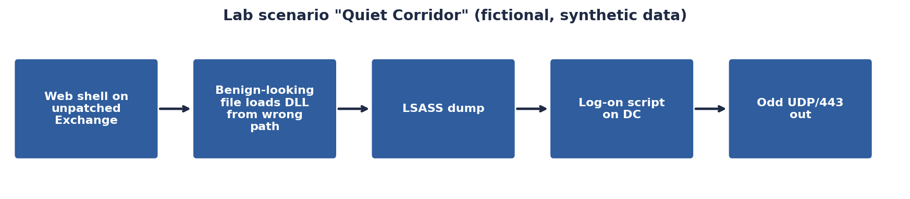

من تقرير الفيندور، لحد الـ SIEM، لحد لاب بتبنيه بنفسك. نسخة مكتوبة من فيديو من 8 فصول.
ملاحظة أمانة: كل الداتا في الأمثلة synthetic وموضّح كده. الأوامر والنتايج اتنفذت فعلاً في sandbox، لكن مفيش Splunk ولا VirusTotal حقيقي؛ منطق الـ hunt اتنفذ بكود Python مكافئ، وصفحة VirusTotal شكل توضيحي. أي هاش من حملة حقيقية ماظهرش كـ detection؛ بنذكر أعداد بس.
الفصل 1: من البلوج للـ SIEM
الـHash في شغل SOC حقيقي
أهلاً. في الفيديو ده هنتكلم عن الـhash، بس مش زي ما بتلاقيه في كتاب الكريبتوجرافي. هنتكلم عنه زي ما بيتستخدم في شغل SOC حقيقي، من أول ما الفيندور ينزّل تقرير، لحد ما الأليرت يطلع قدام المحلل، ولحد ما تبني من ده لاب بنفسك. الفيديو طويل ومقسوم لفصول، فخد وقتك، وفيه أمثلة تتنفذ قدامك على الشاشة.
Hashing in Production
من تقرير الفيندور لحد الـSIEM لحد اللاب
من بلوج الفيندور
خلّينا نبدأ بالصورة الكبيرة. فيندور زي Mandiant أو CrowdStrike أو أي فريق threat intel بينزّل بلوج عن حملة جديدة. جوه البلوج ده فيه الـTTPs، يعني الأساليب اللي استخدمها المهاجم، وفيه الـIOCs: دومينات، عناوين IP، وأهم حاجة عندنا النهارده، الـhashes بتاعة الملفات.
Vendor blog (campaign report) → TTPs (behaviors) → IOCs domains · IPs · file hashes
فريق الـthreat intel
فريق الـthreat intel بياخد الـIOCs دي وينضّفها. بيشيل المكرر، وبيحط جنب كل واحد المصدر، ودرجة الثقة، وتاريخ الانتهاء. وبعدين بتتحط في قايمة مشتركة. ممكن CSV بسيط، أو STIX، أو منصة زي MISP. وده مهم، لأن الـIOC من غير سياق بيتحول لضوضاء بعد كام شهر.
IOC extraction → De-duplicate → Add source · confidence · expiry → CSV / STIX / MISP
من القايمة للـSIEM
بعد كده بييجي دور الـdetection engineer. بيحمّل القايمة دي في الـSIEM كـlookup، يعني جدول بيقارن بيه الأحداث. وبعده الـthreat hunter، اللي بيدوّر بالقايمة دي على الداتا الحالية، وعلى الداتا القديمة كمان. ولو لقى match، فريق الـincident response بيبدأ يحدد النطاق: كام جهاز، ومنين بدأ الموضوع.


الـhash هوية، مش حكم
نقطة مهمة من أول الفيديو: الـhash هوية لملف بالظبط، مش حكم عليه. لو الـhash اتطابق مع IOC معروف، ده بيقولك: الملف ده نفسه اللي اتشاف في الحملة. لكن ميقولكش إن الجهاز مخترق. السياق هو اللي بيقول: مين شغّل الملف، ومن أنهي مسار، وبأنهي command line، واتصل بإيه بعد كده.
Hash = identity of exact bytes
السياق هو اللي بيقول: مين شغّله؟ ومن أنهي مسار؟ واتصل بإيه؟
Pyramid of Pain
وعشان نحط توقعاتنا صح: ديفيد بيانكو، في عرضه المشهور Pyramid of Pain، وصف الـhashes بإنها أعلى مؤشرات في الثقة، لكنها حسّاسة جداً للتغيير، حتى بالغلط. يعني لو المهاجم غيّر بايت واحد، الـhash كله بيتغير. هنرجع للنقطة دي في الفصل الرابع، وهنشوف إيه البدائل اللي بتعمّر أكتر.

References: [1] D. Bianco, "The Pyramid of Pain" (SpeakerDeck) - https://speakerdeck.com/davidjbianco/the-pyramid-of-pain-intel-driven-detection-and-response-to-increase-your-adversarys-cost-of-operations
خريطة الفيديو
خريطة الفيديو: الفصل التاني أساسيات الـhash على الترمنال. التالت، الـhashes بتظهر فين في اللوجز. الرابع، أنواع غير الـhash العادي، وليه المهاجم بيهزمه. الخامس، جانب الـintel. السادس، جانب الـhunter في الـSIEM. والسابع تطبيق كامل على حملة حقيقية حديثة، وإزاي تعمل correlation بين تقارير الفيندورز. والتامن، إزاي تحوّل ده كله للاب جديد، تنزّله على Hack The Box أو أي منصة.
- 2 · أساسيات الـhash على الترمنال
- 3 · الـhashes في اللوجز
- 4 · أبعد من الـhash العادي
- 5 · جانب الـintel
- 6 · جانب الـhunter في الـSIEM
- 7 · حالة دراسية: حملة حديثة
- 8 · من الـcorrelation للاب
الفصل 2: أساسيات الـ hash
أساسيات الـhash على الترمنال
نبدأ بالأساسيات، وعلى الترمنال. هنعمل ملف نصي بسيط ونحسب له الـhash. الأوامر بتتنفذ فعلاً في sandbox، والملف ده مجرد ملف تجريبي مالوش أي ضرر. الأمر الأول sha256sum على الملف.
Sandbox terminal · harmless demo file$ echo "invoice_2026.txt demo" > demo.txt
$ cat demo.txt
invoice_2026.txt demo
$ sha256sum demo.txtSHA-256: ٦٤ حرف hex
شوف الناتج: ٦٤ حرف hex. كل حرفين بيمثلوا بايت، يعني ٣٢ بايت، يعني ٢٥٦ bit. هو ده SHA-256. ولو شغّلت الأمر على نفس الملف مليون مرة، هتاخد نفس الناتج بالظبط. ده معناه إن الـhash deterministic.
Sandbox terminal · harmless demo file$ sha256sum demo.txt
6d2b257dbc14f13f847be988f43ee4db7206f1f451d0f7f97789a8255cfdb9f2 demo.txt
$ sha256sum demo.txt # run it again
6d2b257dbc14f13f847be988f43ee4db7206f1f451d0f7f97789a8255cfdb9f2 demo.txt
# same input, same output: deterministicحرف واحد اتغيّر: 141 / 256 bits و 63 / 64 hex chars
دلوقتي هنعمل تغيير بسيط جداً. هنضيف نقطة في آخر محتوى الملف، يعني حرف واحد بس، ونحسب الـhash تاني. اتغيّر؟ اتغيّر بالكامل. أنا قِستها في الـsandbox: من ٢٥٦ bit، فرق ١٤١ bit، وده قريب من النص، ومن ٦٤ حرف hex، فرق ٦٣ حرف. ده اسمه avalanche effect. تغيير صغير في الدخل، بيغيّر الخرج بشكل ميبانش منه أي شبه.
Sandbox · measured

demo.txt (…demo)
6d2b257dbc14f13f847be988f43ee4db7206f1f451d0f7f97789a8255cfdb9f2
demo2.txt (…demo.)
7413ec07d8b92e40529d443e4715bd1a9e056053cfeeaadefeeb1b8eabac1aefليه ده مفيد؟
ليه ده مفيد؟ لأن الـhash بيشتغل كـfingerprint. لو الـhash اتطابق، الملفين نفس البايتات. ولو اتغير حتى حرف، هتعرف فوراً. ومش بس كده: الـhash one-way. مش ممكن ترجّع الملف من الـhash. فتقدر تشارك الـhash في تقرير من غير ما تشارك الملف نفسه.
- Deterministic: نفس الملف، نفس الـhash
- طول ثابت مهما كان حجم الملف
- One-way: مش بترجّع الملف من الـhash
- Avalanche effect: تغيير صغير يغيّر كل حاجة
MD5 · SHA-1 · SHA-256
دلوقتي ننفذ التلات خوارزميات المشهورة على نفس الملف. MD5 بيدّي ٣٢ حرف، SHA-1 بيدّي ٤٠ حرف، وSHA-256 بيدّي ٦٤ حرف. كلهم بيحوّلوا أي حجم ملف لقيمة بطول ثابت. الفرق إن الخوارزميات القديمة اتكسرت من ناحية الـcollisions، وده بنتكلم عنه دلوقتي.
Sandbox terminal · harmless demo file$ md5sum demo.txt
cbcdf11c260d4a8561e3b77b3ee507f2 demo.txt
$ sha1sum demo.txt
01e8aff618223db63050fe1dd5a0de177d126d15 demo.txt
$ sha256sum demo.txt
6d2b257dbc14f13f847be988f43ee4db7206f1f451d0f7f97789a8255cfdb9f2 demo.txtليه SHA-1 اتساب؟
في فبراير ٢٠١٧، فريق من CWI في أمستردام وجوجل أعلنوا أول SHA-1 collision، يعني ملفين مختلفين ليهم نفس الـhash. حسب مدونة جوجل، الهجوم احتاج حوالي تسع كوينتيليون عملية SHA-1، لكنه لسه أسرع من الـbrute force بأكتر من مية ألف مرة. وNIST كان بالفعل بطّل SHA-1 للتوقيع الرقمي في آخر ٢٠١٣، وكان قرر إنه deprecated من ٢٠١١، ونصح بالانتقال لـSHA-2 أو SHA-3.

References: [2] Google Online Security Blog, "Announcing the first SHA-1 collision" (2017-02-23) - https://security.googleblog.com/2017/02/announcing-first-sha1-collision.html
[3] NIST CSRC, "Research results on SHA-1 collisions" (2017-02-24) - https://csrc.nist.gov/news/2017/research-results-on-sha-1-collisions
في الشغل
طيب ده معناه إيه في الشغل؟ لو IOC جاي بـMD5 أو SHA-1 بس، اعتبره دليل أولي. دوّر بيه، بس أكّد بحاجة تانية: اسم الملف، المسار، الـsigner، الحجم، أو سلوك العملية. ولو انت اللي بتبني قايمة، فضّل SHA-256. وهنشوف في الفصل السابع إن تقرير Unit 42 الحديث بيستخدم SHA-256.
| IOC comes as | Treat it as | Do |
|---|---|---|
| MD5 or SHA-1 only | Initial lead | Search it, then confirm: name, path, signer, size, behavior |
| SHA-256 | Stronger match | Still read the context before acting |
| Your own lists | Prefer SHA-256 | Record the source and date |
References: [4] Unit 42, TGR-STA-0049 custom RATs targeting Southeast Asia governments (Nov 16, 2026) - https://unit42.paloaltonetworks.com/custom-rats-target-southeast-asia-governments/
على ويندوز
وعلى ويندوز، الأمر المقابل هو Get-FileHash مع الخيار -Algorithm SHA256 واسم الملف، والناتج نفسه بالظبط. وده أمر هتحتاجه كتير، خصوصاً في الـforensics.
REFERENCE: PowerShell syntax, not run in this sandbox$ Get-FileHash -Algorithm SHA256 .\demo.txt
Algorithm Hash
--------- ----
SHA256 6D2B257DBC14F13F847BE988F43EE4DB7206F1F451D0F7F97789A8255CFDB9F2عادة المحترف
وفيه عادة بتفرّق المحترف عن غيره: أي ملف أو دليل بتستلمه، احسب الـhash بتاعه الأول، وسجّله في الـcase notes، واشتغل على نسخة، والأصل يفضل زي ما هو. كده تقدر تثبت إن الأصل ما اتغيّرش، وتتأكد إن اللي حلّلته هو بالظبط اللي اتجمع. ده اللي بيفرق بين تحليل تقدر تدافع عنه، وتحليل مش هتقدر تثبته.
Hash the evidence first → Record it in case notes → Work on a copy → Original stays untouched
الخلاصة
الخلاصة: الـhash fingerprint سريع ودقيق لملف بعينه. بس هو بيعرّف الملف، مش بيحكم عليه، وبيتغير بأي تعديل. في الفصل الجاي هنشوف الـhashes دي بتظهر فين في لوجز حقيقية الشكل.
- Fingerprint دقيق لملف بعينه
- بيعرّف الملف، مش بيحكم عليه
- أي تعديل بيغيّره
- الفصل الجاي: الـhashes في اللوجز
الفصل 3: الـ hashes في اللوجز
داتا Sysmon مولّدة للتدريب
تعالى نشوف الـhash في داتا شكلها حقيقي. الداتا اللي هنشتغل عليها في الفصل ده وفي السادس synthetic، أنا اللي ولّدتها: حوالي خمسة آلاف حدث Sysmon، على خمسة وتلاتين جهاز. ومكتوب على الشاشة synthetic عشان محدش يفتكرها داتا حقيقية.
SYNTHETIC DATA5,003 events · 35 hosts
JSONL · كل الأسماء والـhashes مصنوعة
Sysmon Event ID 1: process creation
ده Sysmon Event ID 1، process creation. الحدث بيسجّل الـImage، يعني مسار الملف، والـCommandLine، والـParentImage، يعني مين شغّل العملية، وكمان الـHashes بتاعة ملف العملية. وبحسب توثيق Microsoft، Sysmon بيحسب الـhash بالـSHA1 كـdefault، وتقدر تختار MD5 أو SHA256 أو IMPHASH، أو كلهم.
SYNTHETIC DATA$ head -1 sysmon_synth.jsonl | python3 -m json.tool
{
"_time": "2026-10-20T08:00:00Z",
"host": "WS-014",
"user": "user9",
"EventCode": 1,
"Image": "C:\\Program Files\\Teams\\Teams.exe",
"ParentImage": "C:\\Windows\\explorer.exe",
"CommandLine": "Teams.exe",
"Hashes": "SHA256=169AA62AAFE0F3ED153CC37289C83784E0DC3380386230A6612B15C6E18957FF,IMPHASH=052DEAA50B705F7EFCFC77249D7FD6F8",
"ProcessGuid": "{d1f409db03ca4093}"
}References: [5] Microsoft Learn, Sysinternals Sysmon - https://learn.microsoft.com/en-us/sysinternals/downloads/sysmon
الـconfig بيسجّل إيه؟
وهنا أول سؤال في أي hunt: الـconfig عندكم بيسجّل إيه؟ لو الـconfig سايب الـdefault، يبقى لوجاتك فيها SHA1 بس، وانت جاي بقايمة IOC كلها SHA-256. هتدوّر وهتقول مفيش حاجة، والحقيقة إنك ببساطة بتقارن حاجتين مختلفتين. الإعداد المقترح هنا: HashAlgorithms يكون SHA256 وIMPHASH.
| Per Microsoft docs | Value |
|---|---|
| Process-image hashes | SHA1 (the default), MD5, SHA256 or IMPHASH |
| HashAlgorithms option | MD5, SHA1, SHA256, IMPHASH, or * for all |
| Your IOC list is SHA-256 but logs only have SHA1 | No match, and no error |
| Suggested here | HashAlgorithms = SHA256 + IMPHASH |
References: [5] Microsoft Learn, Sysinternals Sysmon - https://learn.microsoft.com/en-us/sysinternals/downloads/sysmon
ProcessGUID: نربط الأحداث
فيه كمان حقل مهم اسمه ProcessGUID. ده قيمة فريدة للعملية الواحدة، وبتفيد جداً في الربط بين الأحداث. يعني تقدر تقول: العملية دي، إيه العمليات اللي طلعت منها، وإيه الاتصالات الشبكية بتاعتها، وإيه مفاتيح الـregistry اللي كتبتها. هنستخدمه بشكل عملي في الفصل السادس.
Process (Event 1) → Child processes → Network (Event 3, TCP/UDP) → Registry (Event 13)
References: [5] Microsoft Learn, Sysinternals Sysmon - https://learn.microsoft.com/en-us/sysinternals/downloads/sysmon
نفس الملف، أسماء حقول مختلفة
نفس الملف ممكن يظهر في أكتر من مصدر. في الـEDR كحدث كتابة ملف، وفي بوابة الإيميل كمرفق، وفي الـproxy كتحميل، وفي Sysmon كعملية. المشكلة إن كل مصدر بيسمّي الحقل باسم مختلف. ده Hashes، وده SHA256، وده file_hash، وده attachment_sha256. وشكل القيمة كمان بيختلف: ممكن تكون كبيرة أو صغيرة، وممكن يكون قبلها اسم الخوارزمية.
SYNTHETIC DATA
| Source | Field name | Value shape |
|---|---|---|
| Sysmon | Hashes | SHA256=6D2B…,IMPHASH=… |
| EDR file-write | SHA256 | upper case |
| Mail gateway | attachment_sha256 | lower case |
| Proxy | file_hash | plain hex |
الـnormalization
شغل الـdetection engineer هنا إنه يعمل normalization. اسم حقل موحّد، حروف صغيرة، وقيمة من غير prefix. وبعد كده أي IOC بتدوّر بيه، بتدوّر بيه في الحقل الموحّد في كل المصادر مرة واحدة. من غير الخطوة دي، الـmatch بيفوتك، والمشكلة إنك مش هتعرف إنه فاتك.
- اسم حقل موحّد: sha256
- حروف صغيرة
- قيمة من غير prefix
- بحث واحد في كل المصادر
- من غير ده: الـmatch بيفوتك، ومش هتعرف
حدود الـhash
وفيه حد أدنى لازم نقوله بصراحة. الـhash بيتحسب على ملف. لو التنفيذ في الميموري بس، أو الملف اتمسح قبل ما حد يحسبه، مش هتلاقي hash أصلاً. يعني الـhash أداة مفيدة، بس مش شبكة أمان كاملة، وعشان كده الفصول الجاية بتتكلم عن اللي بعده.
- الـhash بيتحسب على ملف
- تنفيذ في الميموري بس = مفيش hash
- الملف اتمسح قبل ما حد يحسبه = مفيش hash
- أداة مفيدة، مش شبكة أمان كاملة
الفصل 4: imphash وfuzzy hashing
نفس الملف تقريباً، SHA-256 مختلف
النهارده بنقول إن الـhash سهل يتغير. تعالى نشوف ده بالأرقام. هنا ملف synthetic، وعملنا منه نسختين. الأولى غيّرنا فيها خمستاشر حرف بس من تلات آلاف كلمة، والتانية غيّرنا ٣٠٠ حرف. وكمان ملف تالت مالوش علاقة بيهم. وبنحسب SHA-256 لكل واحد: الأربع قيم مختلفة تماماً.
SYNTHETIC DATA| File | Change | SHA-256 (first 24 hex) |
|---|---|---|
| base | — | 8c386643cf50532032dcce89… |
| variant A | 15 chars edited | b09a9a9cc859d039c4f2ab16… |
| variant B | 300 chars edited | fb997577a03dca70cd99d49f… |
| unrelated | — | a472c477d609cffea818ab4a… |
Pyramid of Pain
ده بالظبط اللي ديفيد بيانكو قاله في الـPyramid of Pain: الـhashes أعلى مؤشرات في الثقة، لكنها حسّاسة للتغيير، حتى بالغلط. وده معناه عملياً: لو المهاجم أعاد الـcompile، أو ضاف بايت، الـIOC القديم يتحول لحاجة مش بتطابق ولا نسخة.
Hashes: highest confidence
لكن حسّاسة جداً للتغيير، حتى بالغلط
References: [1] D. Bianco, "The Pyramid of Pain" (SpeakerDeck) - https://speakerdeck.com/davidjbianco/the-pyramid-of-pain-intel-driven-detection-and-response-to-increase-your-adversarys-cost-of-operations
imphash
عشان كده ظهرت أنواع تانية. أولها imphash. Mandiant شرحته في مقال قديم: بيتحسب hash من أسماء الـlibraries والـAPIs اللي الملف بيستوردها، وبالترتيب. وده لأن ترتيب الـimports بيطلع من ترتيب الكود وقت الـlink، فعينات من نفس العيلة غالباً بتشارك نفس القيمة. وMandiant كانت بتستخدمه عشان تتبّع الـbackdoors اللي كل مجموعة بتفضّلها.
PE import table (DLL + API names, in order) → Hash of that list → imphash (related samples often share it)
References: [6] Mandiant, "Tracking Malware with Import Hashing" (2014) - https://cloud.google.com/blog/topics/threat-intelligence/tracking-malware-import-hashing/
مثال Mandiant: ترتيب الكود غيّر الـimphash
وعشان نشوف إنه مش سحر، في نفس مقال Mandiant مثال: كود بسيط اتعمل له compile، وطلع imphash، وبعدين اتغيّر ترتيب دالتين في الكود، فطلع imphash مختلف تماماً. القيمتين معروضتين على الشاشة من المقال نفسه. يعني المهاجم اللي عارف بالفكرة ممكن يغيّر ترتيب الكود ويتخطّى الـimphash.
Original source order
0c6803c4e922103c4dca5963aad36ddf
Two functions reordered
b8bb385806b89680e13fc0cf24f4431eReferences: [6] Mandiant, "Tracking Malware with Import Hashing" (2014) - https://cloud.google.com/blog/topics/threat-intelligence/tracking-malware-import-hashing/
حساب الـimphash بـpefile
وده كمان مثال حي على جهازي: دي ملفات PE سليمة جاية مع أداة pip، وبنحسب لها imphash باستخدام مكتبة pefile. لاحظ إن لكل ملف قيمة مختلفة. المقصود هنا طريقة الحساب، مش إن دول عينات malware. وVirusTotal كمان ضافت imphash في ٢٠١٤، بعد ما Mandiant كتبت عنه.
Benign PE files · pefile · method demo only$ python3 -c "import pefile;print(pefile.PE(f).get_imphash())" # f = benign pip launcher stubs
t32.exe imphash 5e24f42b46c247f13d78f0f21a4a2bf7
t64.exe imphash c51d659b4b1142d4af3795d09f1d63f7
w32.exe imphash af457a899dff0be8f96c758b66fd5f37References: [7] VirusTotal blog, "VirusTotal imphash" (2014) - https://blog.virustotal.com/2014/02/virustotal-imphash.html
[6] Mandiant, "Tracking Malware with Import Hashing" (2014) - https://cloud.google.com/blog/topics/threat-intelligence/tracking-malware-import-hashing/
Fuzzy hashes
النوع التالت fuzzy hashes، زي ssdeep وTLSH. دول مش بيقولوا نفس الملف ولا لا، دول بيقولوا الملفين شبه بعض قد إيه. TLSH بيدّيك distance بين ملفين: كل ما الرقم قلّ، الملفين أشبه ببعض. ومن توثيق TLSH، هو distance metric فعلاً، وده اللي بيخليه سريع في البحث عن الأقرب في داتا كبيرة.
- ssdeep و TLSH: الملفين شبه بعض قد إيه؟
- TLSH بيدّي distance: أقل = أشبه
- TLSH distance metric: بحث سريع في داتا كبيرة
References: [8] TLSH, papers and technical overview - https://tlsh.org/papers.html
TLSH distance من الأصل
جربته على نفس الملفات الـsynthetic باستخدام مكتبة TLSH الحقيقية. النسخة اللي اتعدّل فيها ١٥ حرف طلعت على distance ٥ من الأصل. النسخة اللي اتعدّل فيها ٣٠٠ حرف طلعت على distance ٧. والملف اللي مالوش علاقة طلع على distance ٤٤. يعني نفس العيلة قريبة جداً، والغريب بعيد بوضوح، رغم إن الـSHA-256 بتاع كل الأربعة مختلف تماماً.
SYNTHETIC DATA · real TLSH library
| File | Change | TLSH distance |
|---|---|---|
| base | — | 0 |
| variant A | 15 chars edited | 5 |
| variant B | 300 chars edited | 7 |
| unrelated | — | 44 |
أرقام synthetic: مثال على الفكرة، مش حدود تطبّقها على عينات حقيقية
انتبه
بس خد بالك: دي داتا synthetic، والأرقام دي مثال على الفكرة، مش حدود تطبّقها على عينات حقيقية. وكمان فيه ورقة في موقع TLSH بتختبر إزاي ممكن تهاجم الـfuzzy hashes بتغيير متعمد في الملف. يعني حتى دول مش ضمان.
- الأرقام دي synthetic: مثال، مش thresholds
- فيه ورقة بتختبر إزاي بتتهاجم fuzzy hashes بتغيير متعمد
- حتى دول مش ضمان
References: [8] TLSH, papers and technical overview - https://tlsh.org/papers.html
استخدم إيه لإيه
فاستخدم كل نوع في مكانه. الـSHA-256 الدقيق: للحظر السريع، وللبحث الرجعي في الداتا القديمة. الـimphash والـfuzzy hashes: لتجميع العينات في عيلة وتتبعها. والـdetection على السلوك والـTTPs: هو اللي بيعمّر لما كل ده يتغير. والمحلل الكويس مش بيبني detection على hash لوحده.
| Tool | Best for |
|---|---|
| Exact SHA-256 | Quick block, retro-hunt in old data |
| imphash / fuzzy hashes | Cluster samples, track a family |
| Behavior / TTP detections | What lasts when everything else changes |
الفصل 5: جانب الـ intel
IOC section في تقارير حقيقية
نتكلم دلوقتي عن جانب الـintel، يعني الناس اللي بتنتج الـIOCs، وإزاي بتتقرأ. أي تقرير فيندور محترم بيبقى في آخره قسم Indicators of Compromise. ولو فتحت تقرير Unit 42 الأخير، هتلاقي القسم ده مقسّم بالـSHA-256 حسب اسم الـmalware ومتغيّره. وتقرير Kaspersky بيقسّمها حسب المكوّن: loader، payload، backdoor. التنظيم ده بيفرق، لأنك تقدر تعرف الـhash ده بيخص أنهي جزء من السلسلة.
| Report (read) | Hash type | Grouped by | Count in page text |
|---|---|---|---|
| Unit 42, TGR-STA-0049 (Nov 16, 2026) | SHA-256 | Malware variant | 66 unique |
| Securelist, ShadowCloud (Nov 17, 2026) | MD5 | Component (loaders, payload, backdoors...) | 14 unique |
References: [4] Unit 42, TGR-STA-0049 custom RATs targeting Southeast Asia governments (Nov 16, 2026) - https://unit42.paloaltonetworks.com/custom-rats-target-southeast-asia-governments/
[9] Kaspersky Securelist, Operation ShadowCloud part 1 (Nov 17, 2026) - https://securelist.com/operation-shadowcloud-gitdoor/122004/
IOC بسياق
المحلل بياخد الـIOCs دي من العينة نفسها: hashes، دومينات، عناوين IP، مسارات ملفات، أسماء mutexes. بس الأهم من القيمة نفسها هو السياق اللي بتسجّله جنبها: المصدر، أول مرة اتشاف، درجة الثقة، وتاريخ انتهاء. IOC من غير سياق بيتحول لضوضاء بعد شهرين. وعلى الشاشة مثال بجدول CSV synthetic بالأعمدة دي.
SYNTHETIC DATA| sha256 | source | confidence | added | expires |
|---|---|---|---|---|
| 034f79fa067ff7… | SYNTHETIC-feed | high | 2026-11-17 | 2027-02-17 |
| 170c5f7b315edf… | SYNTHETIC-feed | high | 2026-11-17 | 2027-02-17 |
| 771a386f146804… | SYNTHETIC-feed | low | 2026-11-17 | 2027-02-17 |
| 33be69b8e58373… | SYNTHETIC-feed | medium | 2026-11-17 | 2027-02-17 |
CSV و MISP attribute
الـIOCs بتتشارك بأكتر من شكل. CSV بسيط، أو STIX، أو منصة زي MISP. وتوثيق MISP بيوصف الـcore format بإنه JSON بسيط لتبادل events وattributes. والـattributes ليها types، منها sha256، ومنها filename مع sha256 في قيمة واحدة. وعلى الشاشة نفس الصف بتاعنا متحوّل لشكل attribute مبسّط، علشان تبقى الصورة واضحة.
SYNTHETIC DATA$ head -3 data/ioc_hashes.csv | cut -c1-90
sha256,source,confidence,added
034f79fa067ff77b8182ddd1980c24bd2907baa9edf3148658ab7a9eecb52e98,SYNTHETIC-feed,high,2026-11-17
170c5f7b315edf75cff5d8d8b7111125924fc70e92d61193454ba1096d9ee676,SYNTHETIC-feed,high,2026-11-17
# simplified, MISP-style attribute (SYNTHETIC)
{"type": "sha256",
"value": "034f79fa067ff77b8182...",
"comment": "SYNTHETIC-feed, confidence high"}References: [10] MISP data models - https://www.misp-project.org/datamodels/
صفحة ملف في VirusTotal (شكل توضيحي)
وVirusTotal من أشهر الأماكن اللي بتدوّر فيها على hash. الصفحة اللي على الشاشة مكتوب عليها mock-up، يعني أنا اللي رسمتها، مش صفحة حقيقية. فيها التبويبات المعروفة: Detection وDetails وRelations وBehavior وCommunity. والـhash بتبحث بيه بـMD5 أو SHA-1 أو SHA-256، وكلهم بيشتغلوا في خانة البحث حسب توثيقهم.
MOCK-UP drawn by me, not a real VirusTotal page
Detection → Details → Relations → Behavior → Community
References: [11] VirusTotal docs, VirusTotal Intelligence introduction - https://docs.virustotal.com/docs/virustotal-intelligence-introduction
تبويب Community
تبويب Community مهم. في كل ملف أو URL، فيه قسم للـcomments. وVirusTotal بتشجّع المستخدمين يراجعوا العينات ويعلّقوا عليها، لأن ده بيفيد غيرهم. وفيه tags متفق عليها عشان الكومنتس تتبحث بشكل موحّد. وكمان فيه نظام reputation من سالب مية، يعني خبيث بالكامل، لحد مية، يعني سليم بالكامل. بس خد بالك: الكومنتس دي رأي ناس. اتعامل معاها كـlead مش كحقيقة.
- Comments على كل ملف أو URL
- Tags متفق عليها للبحث
- Reputation: من -100 (خبيث) لـ 100 (سليم)
- رأي ناس: اتعامل معاه كـlead
References: [12] VirusTotal docs, Comments - https://docs.virustotal.com/docs/comments
Search modifiers في توثيق VirusTotal
وفيه أدوات بحث متقدمة. في توثيق VirusTotal للـfile search modifiers، فيه modifier اسمه imphash، بيرجّعلك كل ملفات PE اللي ليها نفس الـimport hash، وفيه ssdeep للملفات الشبيهة. دي بتفيدك لما يكون عندك hash واحد وعايز تلاقي إخواته. ومجرد وجود الـmodifiers دي في التوثيق، مش بيقول لك إنها متاحة في أي حساب. اتأكد من الصلاحيات اللي عندك.
| Modifier | Applies to | What it returns |
|---|---|---|
| imphash: | PE files | Files with the given import hash (same family candidates) |
| ssdeep: | Any file type | Files similar to the given ssdeep hash |
موجودة في التوثيق ≠ متاحة في كل حساب. اتأكد من صلاحياتك.
References: [13] VirusTotal docs, File search modifiers - https://docs.virustotal.com/docs/file-search-modifiers
خصوصية
وده تحذير شغل مهم، من توثيق VirusTotal نفسه: أي IoC بتبعته أو بتسأل عنه من الواجهة بيتضاف للـdataset، وبيبقى متاح للـcommunity. فمتبعتش حاجة فيها بيانات حساسة أو بيانات شخصية. يعني ملف خاص بالشركة، متترفعش. والـhash لوحده غالباً أخف بكتير، بس راجع سياسة شركتك قبل ما تسأل عن أي حاجة من incident حقيقي.
WARNINGDo not submit sensitive data
أي IoC من الواجهة بيتضاف للـdataset ويبقى متاح للـcommunity
References: [11] VirusTotal docs, VirusTotal Intelligence introduction - https://docs.virustotal.com/docs/virustotal-intelligence-introduction
MalwareBazaar (abuse.ch)
مصدر تاني مجاني ومفيد: MalwareBazaar من abuse.ch. دي مشروع بيشارك عينات malware مع مجتمع الأمن، وشركات الـAV، ومزودي الـthreat intel. والـAPI محتاج Auth-Key، وبتاخده مجاناً من auth.abuse.ch. ومعاه مصادر زي الـfeeds المفتوحة اللي بتنزل عليها الـIOCs.
- مشاركة عينات malware مع المجتمع وAV vendors وCTI providers
- الـAPI محتاج Auth-Key
- الـAuth-Key مجاني من auth.abuse.ch
References: [14] abuse.ch, MalwareBazaar (GitHub) - https://github.com/abusech/MalwareBazaar/
قواعد ذهبية
قاعدة ذهبية في الـintel: متثقش في مصدر واحد. اتأكد من مصدرين على الأقل. سجّل الـprovenance، يعني مين قال إيه ومتى. حط confidence. وحط expiry، لأن IOC عمره سنة مش زي IOC عمره أسبوع. وفي الفصل السابع هنشوف إن حتى قوايم الفيندورز نفسها ممكن يبقى فيها حاجات مش المفروض تتحظر.
- متثقش في مصدر واحد
- سجّل provenance: مين قال إيه ومتى
- حط confidence
- حط expiry
الفصل 6: الـ hunt في الـ SIEM
قايمة الـIOC كـlookup
وصلنا لجانب الـhunter. عندنا قايمة IOCs من الفيد، وطبعاً synthetic. فيها خمس hashes، ومكتوب جنب كل واحد المصدر ودرجة الثقة. هنحملها كـlookup، ونطابقها على خمسة آلاف حدث Sysmon. لاحظ إن الشاشة مكتوب عليها: SPL-style query، بتتنفذ بمنطق Python مكافئ، لأن Splunk نفسه مش متاح عندي. والنتايج اللي هتشوفها ناتج تنفيذ فعلي، مش مرسومة.
SYNTHETIC DATA$ cut -c1-18,65- data/ioc_hashes.csv
sha256,source,conf…d
034f79fa067ff77b81…,SYNTHETIC-feed,high,2026-11-17
170c5f7b315edf75cf…,SYNTHETIC-feed,high,2026-11-17
771a386f1468040bfb…,SYNTHETIC-feed,low,2026-11-17
33be69b8e58373d32e…,SYNTHETIC-feed,medium,2026-11-17
0f7639d585cafecdaf…,SYNTHETIC-feed,medium,2026-11-17الاستعلام
الاستعلام بيعمل ثلاث حاجات. أولاً بيستخرج الـSHA256 من حقل Hashes بـregex. تانياً بيحوّله لحروف صغيرة عشان يتطابق مع الـlookup، وده بالظبط جزء الـnormalization من الفصل التالت. وتالتاً بيعمل join مع قايمة الـIOC ويطلّع الـmatches بس.
SPL-style · run by equivalent Python logic · SYNTHETICSPL-style (executed here by equivalent Python logic):
index=sysmon EventCode=1
| rex field=Hashes "SHA256=(?<sha256>[A-Fa-f0-9]{64})"
| eval sha256=lower(sha256)
| lookup ioc_hashes sha256 OUTPUT source confidence
| where isnotnull(source)638 صف match. إيه ده؟
نتيجة التنفيذ: ستمية وتمانية وتلاتين صف match. رقم كبير، وأكيد مش ستمية وتمانية وتلاتين اختراق. ده أول درس حقيقي: الـhunter ميبصّش على العدد، بيبص على التوزيع. لما جمّعت الصفوف حسب الـhash، لقيت حاجتين: صفين بس بـconfidence high، وستمية وستة وتلاتين صف على hash واحد بـconfidence low، موزعين على الخمسة وتلاتين جهاز كلهم.
Real output of the equivalent logic · SYNTHETIC DATA

| Group (by sha256) | Rows | Hosts | Confidence |
|---|---|---|---|
| hash A: C:\Users\...\Temp\upd_svc.exe | 1 | 1 | high |
| hash B: C:\ProgramData\vmsync\vmsync.exe | 1 | 1 | high |
| hash C: C:\Program Files\AdminTools\remotehelp.exe | 636 | 35 | low |
ما تبصّش على العدد. بص على التوزيع.
الـhash اللي على كل الأجهزة
الـhash اللي على الخمسة وتلاتين جهاز طلع ملف remotehelp.exe، جاي من Program Files، وده أداة إدارة داخلية في الداتا الـsynthetic. يعني ده dual-use أو إدخال غلط في الفيد. القرار هنا مش بالـhash لوحده: بنبص على المسار، والـparent، والـcommand line، وهل الأداة دي معروفة عندنا. وفي الغالب بنعمل لها exception، وبنبلّغ مصدر الفيد، ونخفّض أولويتها.
SYNTHETIC DATA| Check | Finding |
|---|---|
| Path | C:\Program Files\AdminTools\ (not Temp/AppData) |
| Parent | services.exe |
| Known internal tool? | Yes (in this synthetic scenario) |
| Decision | Exception + tell the feed owner + lower priority |
الصف الأول: WS-014
نرجع للصفين الـhigh. الأول: جهاز WS-014، المستخدم user7، الملف upd_svc.exe، شغال من AppData Local Temp، والـparent بتاعه برنامج Word. ده سياق مقلق بكتير، لأن Word مش المفروض يشغّل exe من Temp. المطابقة قالت لنا إيه الملف، والسياق قال لنا إنه مهم.
SYNTHETIC DATA| Field | Value |
|---|---|
| Time | 2026-11-02 14:12:07Z |
| Host / user | WS-014 / user7 |
| Image | C:\Users\user7\AppData\Local\Temp\upd_svc.exe |
| Parent | WINWORD.EXE |
| IOC confidence | high |
ProcessGUID على Pivot
هنستخدم الـProcessGUID نعمل pivot. العمليات اللي طلعت من upd_svc.exe: عملية cmd واحدة بتشغّل whoami بالـall، بعد ثلاث دقايق تقريباً. الاتصالات الشبكية، Sysmon Event 3: اتصالين UDP على بورت ٤٤٣ لعنوان ١٩٨ نقطة ٥١ نقطة ١٠٠ نقطة ٢٣. وده عنوان من النطاق المخصص للتوثيق، يعني مش عنوان حقيقي. وUDP على ٤٤٣ بيفكّر بـQUIC، وهنشوف في الفصل السابع ليه ده مهم.
SYNTHETIC DATA# pivot on ProcessGuid {a1b2c3d4e5f60718} (query logic run on the synthetic events)
EID 1 cmd.exe /c whoami /all (child, +3 min)
EID 3 udp -> 198.51.100.23:443 (198.51.100.0/24 = documentation range)
EID 3 udp -> 198.51.100.23:443 (198.51.100.0/24 = documentation range)
EID 13 Updater -> Run key (persistence)References: [5] Microsoft Learn, Sysinternals Sysmon - https://learn.microsoft.com/en-us/sysinternals/downloads/sysmon
السلسلة كاملة
والـpersistence: Sysmon Event 13، كتابة في مفتاح Run في الـregistry بالاسم Updater، بيشاور على نفس الملف في Temp. كده عندنا سلسلة كاملة: Word شغّل الملف، الملف سأل عن هوية المستخدم، اتصل بالخارج على UDP، وكتب نفسه في الـRun. ده أقوى بكتير من أي match لـhash.
SYNTHETIC DATA
References: [5] Microsoft Learn, Sysinternals Sysmon - https://learn.microsoft.com/en-us/sysinternals/downloads/sysmon
الصف التاني: SRV-03
الصف التاني: جهاز SRV-03، حساب svc_backup، ملف vmsync.exe من ProgramData، والـparent هو services.exe. يعني شغّال كخدمة. ده يحتاج تحقيق مختلف: إيه الخدمة دي؟ مين نصّبها؟ وهل في change ticket؟ ومن غير سياق إضافي مش هنقدر نقول إنه خبيث، بس هو على الأقل ملف عليه IOC بثقة عالية.
SYNTHETIC DATA| Field | Value |
|---|---|
| Time | 2026-11-09 03:40:00Z |
| Host / account | SRV-03 / svc_backup |
| Image | C:\ProgramData\vmsync\vmsync.exe |
| Parent | services.exe (runs as a service) |
| To ask | Who installed it? Is there a change ticket? |
Retro-hunt
وفيه حاجة الـretro-hunt. الـIOC اتضاف للفيد يوم ١٧ نوفمبر. لكن النشاط على WS-014 كان يوم ٢ نوفمبر، يعني قبلها بخمستاشر يوم. والنشاط على SRV-03 يوم ٩ نوفمبر، يعني قبلها بتمانية أيام. لو كنا بندوّر على الداتا الجديدة بس، كنا هنفوّت الاتنين. عشان كده الـIOC الجديد بيتدوّر بيه على الداتا القديمة كمان.
SYNTHETIC DATA
بعد الـhunt
وبعد ما تخلّص: تحدد النطاق، يعني كام جهاز ومين المستخدمين. تعمل containment. تجمع أي hashes أو دومينات جديدة لقيتها وترجّعها للـintel، عشان الدايرة تكمل. وتكتب كل ده مع الـconfidence، وإيه المؤكد وإيه الاستنتاج. ده شغل الـhunter الحقيقي.
Scope (hosts, users) → Containment → New hashes/domains back to intel → Write-up with confidence
الفصل 7: الـ correlation: Unit 42 + ShadowCloud
حالة دراسية: حملة حديثة
دلوقتي الجزء العملي: حالة دراسية على حملة حديثة. عندنا تقريرين من فيندورين مختلفين في نفس الأسبوع. الأول Unit 42، اتنشر ١٦ نوفمبر ٢٠٢٦، عن مجموعة بيتتبعوها باسم TGR-STA-0049، وليها أسماء تانية عند فيندورز تانيين: REF7707 وEarth Alux وInk Dragon. والتاني من Kaspersky، اتنشر ١٧ نوفمبر، اسمه Operation ShadowCloud. وكل المعلومات اللي هتسمعها من التقريرين دول، ومكتوب مصدرها على الشاشة، ومش هنعيد نشر الـhashes الحقيقية، بس هنشير لها.
Public reports, cited · real hashes not re-hostedTGR-STA-0049 + Operation ShadowCloud
Unit 42 (Nov 16, 2026) و Kaspersky (Nov 17, 2026)
References: [4] Unit 42, TGR-STA-0049 custom RATs targeting Southeast Asia governments (Nov 16, 2026) - https://unit42.paloaltonetworks.com/custom-rats-target-southeast-asia-governments/
[9] Kaspersky Securelist, Operation ShadowCloud part 1 (Nov 17, 2026) - https://securelist.com/operation-shadowcloud-gitdoor/122004/
مين TGR-STA-0049؟
نبدأ بمين دول. TGR-STA-0049 حسب Unit 42 نشطة على الأقل من مارس ٢٠٢٣، وبتستهدف حكومات في جنوب شرق آسيا وأمريكا الجنوبية وأوروبا. قبل كده استخدمت backdoor اسمه Squidoor. وفي الحملة الأخيرة، من منتصف ٢٠٢٥، ظهرت عندهم عيلتين malware جداد: PerfectPioneer RAT، اتشافت في يوليو ٢٠٢٥، وخليفتها المعيارية KUKURAT، اللي اتشافت من مارس ٢٠٢٦.
| Fact (per Unit 42) | Value |
|---|---|
| Also tracked as | REF7707, Earth Alux, Ink Dragon |
| Active since | At least March 2023 |
| Targets | Government: SE Asia, South America, Europe |
| Earlier backdoor | Squidoor (FINALDRAFT) |
| Current campaign | PerfectPioneer RAT (Jul 2025), KUKURAT (Mar 2026) |
References: [4] Unit 42, TGR-STA-0049 custom RATs targeting Southeast Asia governments (Nov 16, 2026) - https://unit42.paloaltonetworks.com/custom-rats-target-southeast-asia-governments/
الدخول للشبكة
الدخول للشبكة: حسب Unit 42، الطريق الأساسي هو استغلال سيرفرات Exchange وسيرفرات ويب غير محدّثة، وزرع web shells، منها ASPXSpy وGodzilla وSuo5. والطريق التاني هو الـphishing، بملفات PDF مضللة ودومينات شبه مواقع حكومية. وده أول درس: الـhash بتاع أي ملف من دول مش هيحميك. اللي هيحميك هو الـpatching، والمراقبة على الـweb shells.
| Vector | Details (per Unit 42) |
|---|---|
| Primary | Exploit unpatched Exchange / web servers, drop web shells (ASPXSpy, Godzilla, Bysunue.aspx, Suo5) |
| Secondary | Phishing: decoy PDFs, look-alike government domains |
الـhash بتاع ملف منهم مش هيحميك. الـpatching والمراقبة هي اللي بتحمي.
References: [4] Unit 42, TGR-STA-0049 custom RATs targeting Southeast Asia governments (Nov 16, 2026) - https://unit42.paloaltonetworks.com/custom-rats-target-southeast-asia-governments/
PerfectPioneer RAT
نيجي للـmalware. PerfectPioneer مكتوب بلغة Go، واتشاف منه ستة متغيرات، بأسماء زي newhttp3 وPerfectRat وPioneer. بيتشغّل بتلات طرق: DLL side-loading، يعني ملف سليم متعدل ومعاه DLL خبيث، أو decoy installer بيشغّل مثلاً installer لـGlobalProtect عشان يغطي على التشغيل، أو phishing بملف متنكر بأيقونة PDF. وبيتواصل مع الـC2 بـHTTP/3، وبيرجع لـHTTP/2 لو فشل.
| Aspect | Per Unit 42 |
|---|---|
| Language | Go |
| Variants | Six: newhttp3, PerfectRat, Pioneer, RatAAkk-tt, rat_http3_ls, rat_http3_cc |
| Execution | DLL side-loading · decoy installers · phishing with PDF-icon executables |
| C2 | HTTP/3, falls back to HTTP/2 |
References: [4] Unit 42, TGR-STA-0049 custom RATs targeting Southeast Asia governments (Nov 16, 2026) - https://unit42.paloaltonetworks.com/custom-rats-target-southeast-asia-governments/
نقطة الـcorrelation
وفيه نقطة بتفيدنا في الـcorrelation بالذات. Unit 42 بتقول إن الـURL endpoints اللي بيستخدمها PerfectPioneer، زي register وheartbeat وtasks وresult، هي نفسها اللي استخدمها KUKURAT بعد كده، وده دليل بيربط العيلتين بخط تطوير واحد. شوف الفرق: الـhashes اتغيّرت بين العيلتين بالكامل، لكن سلوك الـC2 ظل زي ما هو. ده مثال حي على إن التتبع بالسلوك بيعمّر أكتر من الـhash.
| PerfectPioneer (newhttp3) C2 endpoint | Usage |
|---|---|
| /agent/register | Register a new agent |
| /agent/heartbeat | Heartbeat to C2 |
| /agent/tasks | Get tasks |
| /agent/result | Send task result |
Unit 42: نفس الـendpoints بيستخدمها KUKURAT. الـhashes اتغيّرت، السلوك لا.
References: [4] Unit 42, TGR-STA-0049 custom RATs targeting Southeast Asia governments (Nov 16, 2026) - https://unit42.paloaltonetworks.com/custom-rats-target-southeast-asia-governments/
KUKURAT
KUKURAT مكتوب بـC++، وهو إطار modular بالكامل. كل قدراته تقريباً بتتحمّل كـDLL modules من الـC2 مباشرة في الميموري وقت الحاجة، وبيدعم على الأقل اتناشر module. معناه إن الملف الأساسي نفسه مفيهوش كود القدرات المتقدمة. وده يربط بالفصل التالت: لو الـmodule اتحمّل في الميموري بس ومحصلش له كتابة على القرص، مفيش hash ملف تحسبه. هنا بتحتاج EDR وmemory analysis، مش بس IOC lists.
- C++ · modular بالكامل
- 12+ DLL modules بتتحمّل من الـC2 في الميموري
- الملف الأساسي مفيهوش كود القدرات المتقدمة
- بدون كتابة على القرص = مفيش file hash
References: [4] Unit 42, TGR-STA-0049 custom RATs targeting Southeast Asia governments (Nov 16, 2026) - https://unit42.paloaltonetworks.com/custom-rats-target-southeast-asia-governments/
Heuristic camouflage engine
ومن الحاجات اللي ذكرها التقرير: KUKURAT عنده heuristic camouflage engine، بيولّد نشاط شكله عادي على التلات محاور: الشبكة، والـregistry، والملفات. يعمل عشرة طلبات HTTP وهمية لدومينات مشهورة، ويكتب ويقرا ويمسح مفتاح شبه بتاع Chrome، وينشئ ملفات مؤقتة عشوائية في temp ويمسحها فوراً. يعني جزء من اللي بتشوفه في اللوجز، ضوضاء مقصودة.
| Axis | Per Unit 42 |
|---|---|
| Network | 10 decoy HTTP requests per cycle to a hard-coded list of 15 popular sites |
| Registry | Mimics Chrome browser activity (write, read back, delete) |
| Files | Random temp files created and deleted immediately |
جزء من اللي بتشوفه في اللوجز: ضوضاء مقصودة.
References: [4] Unit 42, TGR-STA-0049 custom RATs targeting Southeast Asia governments (Nov 16, 2026) - https://unit42.paloaltonetworks.com/custom-rats-target-southeast-asia-governments/
بعد الدخول
بعد ما يدخل: الحركة الجانبية. Unit 42 بتقول إن أبرز طريقة هي التلاعب بـdomain log-on scripts. بعد ما يخترق الـdomain controller، بيركّب log-on script خبيث، فكل مستخدم يسجّل دخول، السكريبت يشتغل ويحمّل KUKURAT. وكمان بيستخدم PsExec وWMI وWinRM. والـcredentials بيسرقها بـdump لـLSASS عن طريق comsvcs.dll، وبـDCSync، وأدوات زي Mimikatz وProcDump وSharpDPAPI.
Compromise the domain controller → Malicious log-on script → Runs when users log on → Downloads KUKURAT
References: [4] Unit 42, TGR-STA-0049 custom RATs targeting Southeast Asia governments (Nov 16, 2026) - https://unit42.paloaltonetworks.com/custom-rats-target-southeast-asia-governments/
الاستخراج والإيميلات
وفي الاستخراج: ملفات PDF وDOCX وXLSX وPNG، وبيستهدف الإيميلات كمان. من سيرفر Exchange بيشغّل أوامر PowerShell يدوّر بيها على حسابات عندها ApplicationImpersonation، ولو ملقاش، بيعمل loop على كل الـmailboxes ويدّي حساب مخترق FullAccess. وده بالظبط اللي نقدر نحوّله لـdetection على السلوك.
- PDF · DOCX · XLSX · PNG
- فحص حسابات ApplicationImpersonation على Exchange
- لو مفيش: FullAccess على كل الـmailboxes بـloop
- نحوّله لـdetection على السلوك
References: [4] Unit 42, TGR-STA-0049 custom RATs targeting Southeast Asia governments (Nov 16, 2026) - https://unit42.paloaltonetworks.com/custom-rats-target-southeast-asia-governments/
خطوات الـcorrelation
نجمع. الخطوة الأولى: الجمع. بنجمع كل التقارير عن الحملة، وبنسجّل المصدر والتاريخ والرابط. الخطوة التانية: الاستخراج. تقرير Unit 42 فيه ٦٦ SHA-256 مجمّعين حسب المتغير. وتقرير Kaspersky فيه MD5، مجمّعين حسب المكوّن. وبنسجّلهم في جدول واحد: النوع، العيلة، المكوّن، المصدر، التاريخ، الثقة.

1. Collect (sources + dates + URLs) → 2. Extract 66 SHA-256 / 14 MD5 → 3. Normalize one table
References: [4] Unit 42, TGR-STA-0049 custom RATs targeting Southeast Asia governments (Nov 16, 2026) - https://unit42.paloaltonetworks.com/custom-rats-target-southeast-asia-governments/
[9] Kaspersky Securelist, Operation ShadowCloud part 1 (Nov 17, 2026) - https://securelist.com/operation-shadowcloud-gitdoor/122004/
مشكلة حقيقية
ومشكلة حقيقية هنا: SHA-256 في تقرير، وMD5 في تقرير. مينفعش تعمل join مباشر. الحل إنك تجيب باقي الـhashes للملفات دي من مصدر زي VirusTotal أو MalwareBazaar، وتوحّد على SHA-256. وده بيحتاج حساب وAPI Key، وبالحذر اللي قلناه: متبعتش حاجة حساسة لمصادر عامة. وأنا في الفيديو ده ما عملتش الخطوة دي على الـhashes الحقيقية.
| Report | Hash type | Length |
|---|---|---|
| Unit 42 | SHA-256 | 64 hex chars |
| Securelist | MD5 | 32 hex chars |
مفيش join مباشر. الحل: enrich لـSHA-256 من VirusTotal أو MalwareBazaar. (ما عملتهاش على الـhashes الحقيقية هنا.)
الـoverlap
الخطوة التالتة: الـoverlap. بنقارن التقريرين. الاتنين بيستهدفوا حكومات في آسيا. الاتنين بيستخدموا DLL side-loading. بس طريقة الدخول مختلفة: Unit 42 بتقول استغلال Exchange وweb shells، وKaspersky بتقول إن نقطة الدخول مش معروفة بالظبط. والـC2 مختلف: HTTP/3 في واحد، وSharePoint وGitHub وAbly في التاني. ومن اللي قريته، مفيش IOC مشترك مذكور بين التقريرين، ومفيش تقرير بيقول إن الحملتين لنفس الفاعل.

| Unit 42 | Securelist | |
|---|---|---|
| Targets | Gov: SE Asia (+ S. America, Europe) | Asia and Africa, mostly gov |
| DLL side-loading | Yes | Yes (start.exe, javaw.exe, pythonw.exe + loaders) |
| C2 | HTTP/3 (QUIC) | SharePoint, GitHub, Ably |
| Entry | Exchange exploits, phishing | Unknown (MeshAgent) |
| Shared IOCs stated | None | None |
References: [4] Unit 42, TGR-STA-0049 custom RATs targeting Southeast Asia governments (Nov 16, 2026) - https://unit42.paloaltonetworks.com/custom-rats-target-southeast-asia-governments/
[9] Kaspersky Securelist, Operation ShadowCloud part 1 (Nov 17, 2026) - https://securelist.com/operation-shadowcloud-gitdoor/122004/
الاستنتاج الأمين
وKaspersky بتقول إن الجزء التاني من تقريرها هيفحص دلائل ارتباط بمجموعات ناطقة بالصيني. فالاستنتاج الأمين: تشابه في الأسلوب، مش إثبات إنهم نفس الجهة. والـanalyst الكويس بيكتب confidence، وبيكتب إيه اللي ناقص عشان يرفعها: مثلاً إن يتأكد overlap في البنية التحتية، أو في الكود، أو في أسماء المشاريع.
- تشابه في الأسلوب
- مش إثبات إنهم نفس الجهة
- Kaspersky: الجزء التاني هيفحص ارتباط بمجموعات ناطقة بالصيني
- اكتب confidence وإيه اللي ناقص
References: [9] Kaspersky Securelist, Operation ShadowCloud part 1 (Nov 17, 2026) - https://securelist.com/operation-shadowcloud-gitdoor/122004/
IOC lists فيها ملفات سليمة
ونقطة مهمة في الـIOC lists: قايمة Kaspersky فيها قسم اسمه Legitimate executables، يعني hashes لملفات سليمة زي Sandboxie start.exe وJava وPython، اللي استخدمها المهاجم في الـside-loading. لو حطيت الـhashes دي في blocklist، هتوقف برامج شرعية. فكل IOC لازم يتقرا بالسياق، مش بس يتنسخ.
| Securelist section: "Legitimate executables" | Why it is there |
|---|---|
| javaw.exe (OpenJDK) | Used for DLL side-loading |
| start.exe (Sandboxie) | Used for DLL side-loading |
| pythonw.exe (Python) | Used for DLL side-loading |
لو حطيتهم في blocklist هتوقف برامج شرعية.
References: [9] Kaspersky Securelist, Operation ShadowCloud part 1 (Nov 17, 2026) - https://securelist.com/operation-shadowcloud-gitdoor/122004/
ربط بـMITRE ATT&CK (أسماء الـtactics بس)
الخطوة الرابعة: الربط بـMITRE ATT&CK، بأسماء الـtactics. الـweb shells على Exchange: Initial Access وPersistence. الـDLL side-loading: Defense Evasion. الـlog-on scripts وPsExec وWMI وWinRM: Lateral Movement. الـLSASS dump والـDCSync: Credential Access. أوامر الـExchange للإيميلات: Collection. والـC2 على HTTP/3: Command and Control. وأنا هنا بذكر أسماء الـtactics بس، ومش بكتب technique IDs، عشان ما اتحققتش منها.

| Behavior (Unit 42) | Tactic |
|---|---|
| Web shells on Exchange | Initial Access / Persistence |
| DLL side-loading | Defense Evasion |
| Log-on scripts, PsExec, WMI, WinRM | Lateral Movement |
| LSASS dump, DCSync | Credential Access |
| Exchange mailbox permissions | Collection |
| C2 over HTTP/3 | Command and Control |
Technique IDs مش معروضة: ما اتحققتش منها.
References: [4] Unit 42, TGR-STA-0049 custom RATs targeting Southeast Asia governments (Nov 16, 2026) - https://unit42.paloaltonetworks.com/custom-rats-target-southeast-asia-governments/
Detections مش معتمدة على hash
والخطوة الخامسة: نحوّل ده لـdetections مش معتمدة على hash. مثلاً rundll32 مع comsvcs.dll على lsass. UDP على بورت ٤٤٣ خارج من سيرفر ملوش سبب يستخدم QUIC، وUnit 42 بتقول إن بعض الـfirewalls القديمة مش بتفحص UDP زي TCP. تغيير في log-on scripts على الـdomain controller. وأوامر Exchange اللي بتدوّر على ApplicationImpersonation أو بتعمل Add-MailboxPermission في loop. وملف سليم الشكل بيحمّل DLL من مسار غير متوقع.
| Idea | Source |
|---|---|
| rundll32 + comsvcs.dll against lsass | Unit 42 |
| UDP/443 outbound from a server with no reason for QUIC | Unit 42 |
| New or changed log-on scripts on a DC | Unit 42 |
| Exchange: ApplicationImpersonation checks, Add-MailboxPermission loop | Unit 42 |
| Signed binary loading a DLL from an unexpected path | Unit 42 / Securelist |
References: [4] Unit 42, TGR-STA-0049 custom RATs targeting Southeast Asia governments (Nov 16, 2026) - https://unit42.paloaltonetworks.com/custom-rats-target-southeast-asia-governments/
اكتب نواقصك
والخطوة الأخيرة: اكتب confidence ونواقصك. إيه المؤكد من التقارير؟ إيه اللي استنتاجك؟ إيه اللي محتاج مصدر تاني؟ وده اللي بيخلّي الـwrite-up بتاعك على الـportfolio شكله شغل محلل حقيقي، مش مجرد نسخ ولصق من تقارير الفيندورز.
| Confirmed in reports | My inference | Needs another source |
|---|---|---|
| Both target Asian governments; both use DLL side-loading | Similar tradecraft | Shared infrastructure / code |
| No shared IOCs stated | Not proven same actor | Securelist part 2 attribution analysis |
الفصل 8: فكرة اللاب
من الـcorrelation للاب
دلوقتي نحوّل اللي عملناه لفكرة لاب جديدة، تنزّلها على Hack The Box أو CyberDefenders أو أي منصة، أو تحطها في الـportfolio. القاعدة الأولى: اللاب مفيهوش malware حقيقي ولا hashes حقيقية من الحملة. بنبني سيناريو مستوحى من الأساليب، وبداتا synthetic. كده تتجنب أي مخاطر، وتقدر تنشره بحرية.
LAB DESIGN · all data syntheticPublic report → synthetic scenario
لا malware حقيقي ولا hashes حقيقية من الحملة
سيناريو: Quiet Corridor
اسم السيناريو: Quiet Corridor. القصة: وزارة خيالية، سيرفر Exchange غير محدّث. المهاجم يزرع web shell، وبعدين ملف سليم الشكل يحمّل DLL من مكان غلط، dump لـLSASS، log-on script على الـdomain controller، واتصالات UDP على ٤٤٣ غريبة. الأساليب دي مأخوذة من تقرير Unit 42 وتقرير Kaspersky، لكن كل البيانات والأسماء مصنوعة.

الـartifacts
الـartifacts اللي هتولّدها: لوجز Sysmon بصيغة JSONL، وأحداث Windows Security، ولوج PowerShell الخاص بـExchange، ولوج شبكة بشكل Zeek فيه اتصالات UDP على ٤٤٣، وقايمة IOCs من الـSHA-256 المولّدة، وواحد منها hash لملف سليم. وده بالظبط اللي عملته في الفصل السادس، بس بحجم أكبر.
- Sysmon JSONL
- Windows Security events
- Exchange PowerShell log
- لوج شبكة بشكل Zeek فيه UDP/443 شاذ
- IOC list بـSHA-256 مولّدة، واحد منها ملف سليم
أسئلة اللاب
أسئلة اللاب، وكل سؤال بيمشي مع فصل من الفيديو. السؤال الأول: أنهي جهاز بدأ فيه التنفيذ وإيه الـparent؟ التاني: أنهي SHA-256 من قايمة الـIOC ظهر فعلاً في الداتا؟ التالت: ليه hash معين في القايمة مينفعش يتحظر؟ الرابع: أنهي جهاز طلّع UDP على ٤٤٣ من غير سبب؟ الخامس: أنهي log-on script اتغيّر ومين غيّره؟ السادس: إيه الـATT&CK mapping للمراحل؟ والسابع: اكتب قايمة IOC نضيفة بالـconfidence.
| # | Question | Chapter skill |
|---|---|---|
| 1 | Which host started execution, and what was the parent? | 6 |
| 2 | Which SHA-256 from the IOC list is in the data? | 3, 6 |
| 3 | Why must one listed hash not be blocked? | 7 |
| 4 | Which host sent UDP/443 for no reason? | 7 |
| 5 | Which log-on script changed, and who changed it? | 7 |
| 6 | Map the stages to ATT&CK tactics | 7 |
| 7 | Write a clean IOC list with confidence | 5 |
الـbuild kit
الـbuild kit بتاع اللاب: أولاً، generator script بيولّد اللوجز والـhashes، زي اللي استخدمته في الفيديو. تانياً، Docker فيه Splunk أو Elastic لو عندك، أو ملفات JSONL تتحلل بـPython. تالتاً، answer key وwrite-up. ورابعاً، README فيه كل المراجع. والـIOC list تكون بصيغة MISP attributes، عشان تبان محترف.
- Generator script للـlogs والـhashes
- Docker فيه Splunk/Elastic، أو JSONL + Python
- Answer key وwrite-up
- README بالمراجع · IOC list بصيغة MISP
منين تجيب المعلومات؟
ومنين تجيب المعلومات؟ بلوجز الفيندورز: Unit 42 وKaspersky وESET وTalos وGoogle Threat Intelligence وMicrosoft. تحذيرات الحكومات زي CISA والـCERTs. الفيدز المفتوحة زي MISP وMalwareBazaar، ومعاها Auth-Key مجاني. VirusTotal للـlookup مع تحذير الخصوصية. وMITRE ATT&CK للـmapping. وأنا قريت بنفسي تقارير Unit 42 وKaspersky، والباقي أمثلة على أماكن الدوّر، وراجع كل مصدر قبل ما تستند عليه.
| Type | Where | Status |
|---|---|---|
| Vendor reports | Unit 42, Kaspersky Securelist | Read for this video |
| Feeds / lookups | MISP, MalwareBazaar (free Auth-Key), VirusTotal | Docs read |
| Framework | MITRE ATT&CK | Not verified here |
| Other vendors | ESET, Talos, Google Threat Intelligence, Microsoft | Examples, check each yourself |
| Government | CISA advisories, CERTs | Examples, check each yourself |
هيكل البلوج
وهيكل البلوج للـportfolio: أولاً ملخص الحملة. تانياً جدول IOCs منسّق. تالتاً مقارنة التقارير مع الـoverlap والـconfidence. رابعاً ATT&CK map. خامساً detections مش معتمدة على hash. سادساً اللاب. وسابعاً المراجع. وأهم نصيحة: اكتب إيه اللي تعرفه، وإيه اللي مش تعرفه. ده اللي بيبيّن إنك محلل حقيقي.
- 1 · ملخص الحملة
- 2 · جدول IOCs منسّق
- 3 · مقارنة التقارير + overlap + confidence
- 4 · ATT&CK map
- 5 · Detections مش hash-based
- 6 · اللاب · 7 · المراجع
الخلاصة
شكراً إنك كملت لحد هنا. الرحلة كانت من الـhash كـfingerprint، لحد ما يبقى جزء من منظومة: intel بينتج، وSIEM بيدوّر، وhunter بيتحقق، ومحلل بيربط التقارير، وانت في الآخر بتبني لاب تثبت بيه إنك فاهم. ولو عايز تتعمق في أي فصل، قول أنهي واحد وأنا أعمله بتفصيل أكتر.
Hash → Intel → SIEM → Hunter → Lab
اكتب إيه اللي تعرفه، وإيه اللي مش تعرفه
الحقيقي وال synthetic
- حقيقي: الأوامر بتتنفذ في sandbox، ومخرجاتها (avalanche: حرف واحد قلب 141 من 256 bit و63 من 64 hex char؛ مسافات TLSH على variants synthetic: 5 و7 و44؛ imphash على ملفات pip launcher سليمة لشرح الطريقة بس).
- حقيقي: ناتج منطق الـ hunt على الداتا الـ synthetic: 638 match = 2 high-confidence + 636 low-confidence لأداة إدارة سليمة واحدة. الـ pivot على WS-014 وتواريخ الـ retro-hunt (15 و8 يوم) مخرجات فعلية لكود Python.
- Synthetic / mock-up: Sysmon events (5,003 حدث، 35 جهاز)، أسماء الأجهزة والمستخدمين، الـ IOC feed، سجلات CSV/MISP، وصفحة VirusTotal (شكل توضيحي). الـ IPs من documentation ranges. الـ SIEM queries بصيغة SPL-style ومتنفذة بمنطق Python مكافئ. الرسومات والـ GIFs في المقال مرسومة خصيصاً للشرح.
- مش مدّعى: ATT&CK technique IDs (أسماء الـ tactics بس)، أي ادعاءات عن شرائح VirusTotal، شكل تقارير CISA، أو إن تقريري Unit 42 وSecurelist لنفس الجهة: الاتنين بيشتركوا في أسلوب مشابه ومفيش IOCs مشتركة.
المراجع
- D. Bianco, "The Pyramid of Pain" (SpeakerDeck) - https://speakerdeck.com/davidjbianco/the-pyramid-of-pain-intel-driven-detection-and-response-to-increase-your-adversarys-cost-of-operations
- Google Online Security Blog, "Announcing the first SHA-1 collision" (2017-02-23) - https://security.googleblog.com/2017/02/announcing-first-sha1-collision.html
- NIST CSRC, "Research results on SHA-1 collisions" (2017-02-24) - https://csrc.nist.gov/news/2017/research-results-on-sha-1-collisions
- Unit 42, TGR-STA-0049 custom RATs targeting Southeast Asia governments (Nov 16, 2026) - https://unit42.paloaltonetworks.com/custom-rats-target-southeast-asia-governments/
- Microsoft Learn, Sysinternals Sysmon - https://learn.microsoft.com/en-us/sysinternals/downloads/sysmon
- Mandiant, "Tracking Malware with Import Hashing" (2014) - https://cloud.google.com/blog/topics/threat-intelligence/tracking-malware-import-hashing/
- VirusTotal blog, "VirusTotal imphash" (2014) - https://blog.virustotal.com/2014/02/virustotal-imphash.html
- TLSH, papers and technical overview - https://tlsh.org/papers.html
- Kaspersky Securelist, Operation ShadowCloud part 1 (Nov 17, 2026) - https://securelist.com/operation-shadowcloud-gitdoor/122004/
- MISP data models - https://www.misp-project.org/datamodels/
- VirusTotal docs, VirusTotal Intelligence introduction - https://docs.virustotal.com/docs/virustotal-intelligence-introduction
- VirusTotal docs, Comments - https://docs.virustotal.com/docs/comments
- VirusTotal docs, File search modifiers - https://docs.virustotal.com/docs/file-search-modifiers
- abuse.ch, MalwareBazaar (GitHub) - https://github.com/abusech/MalwareBazaar/